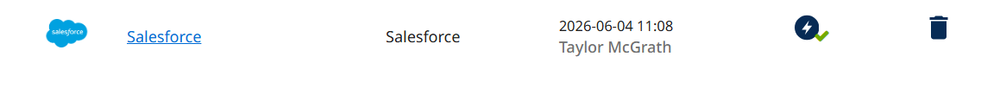
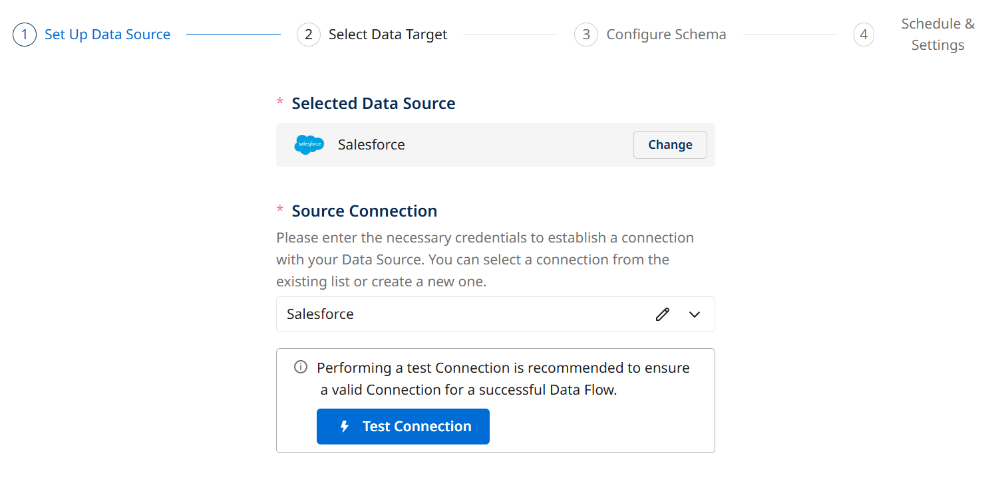
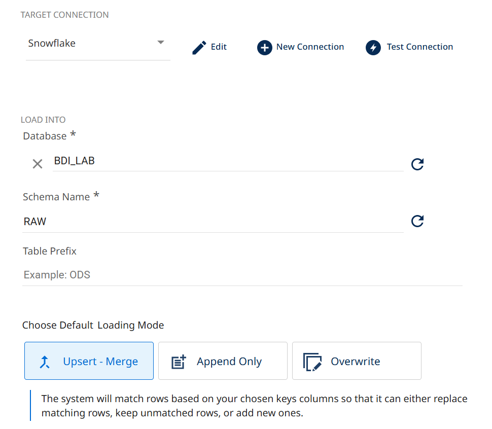
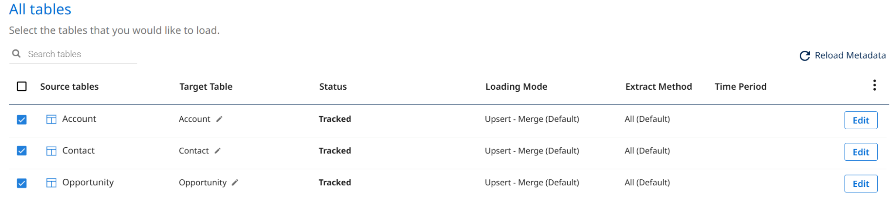
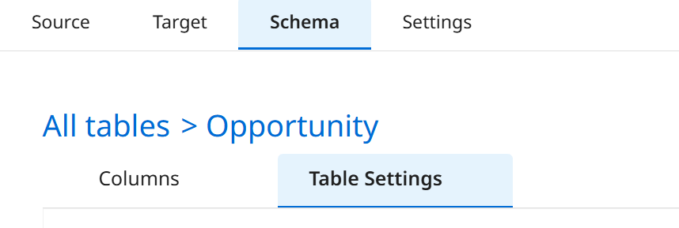
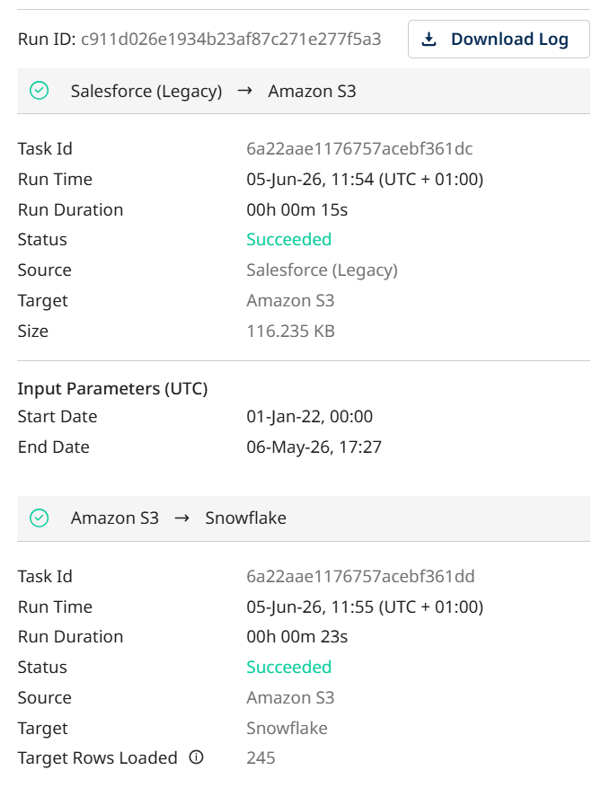
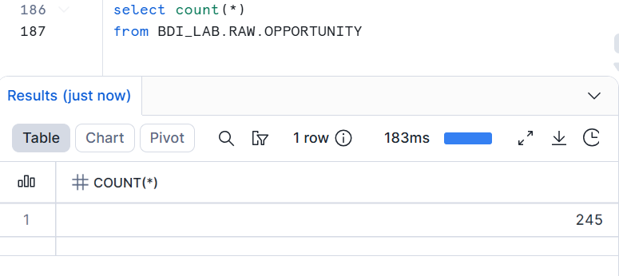

Ingest Salesforce Data into Snowflake
Use BDI's native Salesforce connector to pull CRM objects into the same RAW schema.
What you'll do
Now the other half of the picture: the CRM. You'll use the same Source-to-Target interface, but connect to a SaaS API instead of a database. You'll pull Account, Opportunity, and Contact objects from Salesforce into BDI_LAB.RAW.
Connect BDI to Salesforce
- 1
In BDI, go to Connections. You should see a Salesforce connection called Salesforce already provisioned. Click it and verify the test passes.

Create the Salesforce → Snowflake Flow
- 1
Click Create → Source to Target Flow. Search for Salesforce and choose the Salesforce option. From the connection dropdown, choose the Salesforce connection if not already selected.

- 2
Navigate to the Select Data Target tab. Choose Snowflake and your Exercise 0 connection. Set Database to
BDI_LABand Schema toRAW.
- 3
Navigate to the Configure Schema tab. For the extraction mode, select Bulk API. Next you'll see a list of Salesforce entities. Select: Account, Opportunity, Contact.

- 4
On the Opportunity entity, set the Extract Method to Incremental with systemmodstamp as the incremental field.and Start Date to January 1, 2022. Leave End Date empty.

- 5
Navigate to the Sechedule and Settings tab. Name the flow bdi-lab-salesforce-snowflake and click Activate to activate the data flow.
Run & Verify
- 1
After the activation process, click Run Data Flow at the bottom of the screen. Open the Activities screen and wait for all three tables to show green check marks.

- 2
In Snowsight, confirm data arrived:
SELECT COUNT(*) AS opportunities FROM BDI_LAB.RAW.OPPORTUNITY; SELECT * FROM BDI_LAB.RAW.ACCOUNT LIMIT 5;The Target Rows Loaded in the run tree should match the row count on first run.

Next up